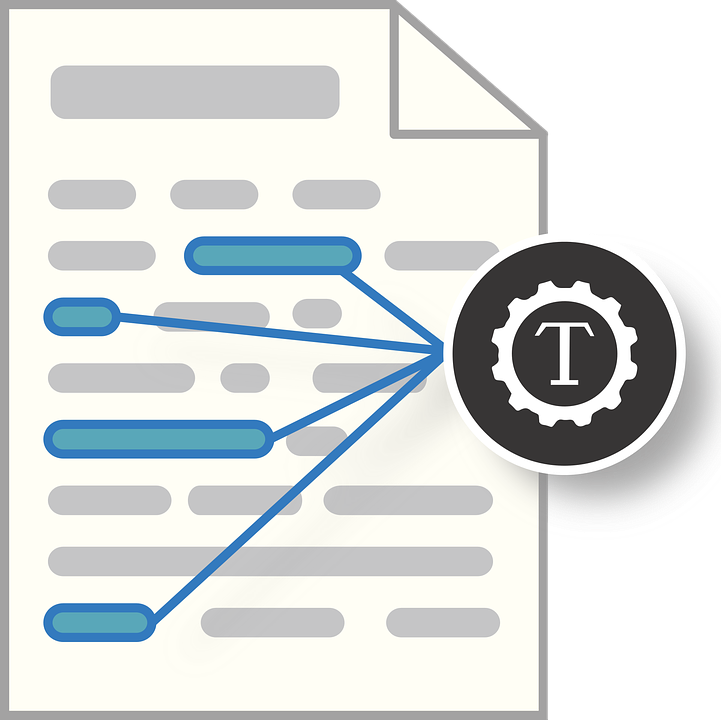

Over the last decade, there has been an ongoing trend to the development of large software ecosystems, which interconnect and reuse components across traditional system boundaries to facilitate a global use of these systems. At the same time, the ecosystems however also face new challenges, in particular in the form of exposure to vulnerabilities and security concerns which are often affecting now no longer only individual systems but might have a global impact. Vulnerabilities and security concerns are typically recorded in issue trackers and specialized vulnerability databases. At the same time, traditional Issue trackers have evolved from simple bug reporting tools, to project assets, which provide communication logs, as by-products leading to bug resolutions. Collaboration in bug reports occurs in the form of conversations, similar to email threads, where participants post messages or comments in order to address a bug. Unlike a wiki or other collaborative documentation environments, issue tracker system were not constructed with the intention of being easy to read and comprehend, since comments have a context and often rely on previous comments and useful information spread throughout a bug report and the messages. In order to comprehend a bug report, it is often necessary to read almost the entire conversation to gain a sentiment to be able to prioritize, identify and locate relevant resources necessary to address and resolve reported issues. In order to guide maintainers during this task, we introduce a bug report digestion and resource location; we propose a new, unsupervised, bug report classification to help maintainers to focus on security concerns.